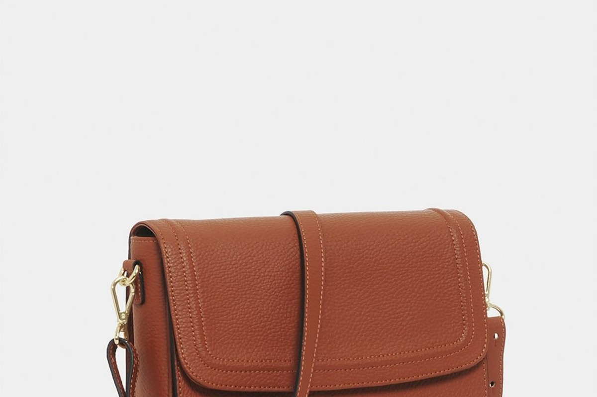
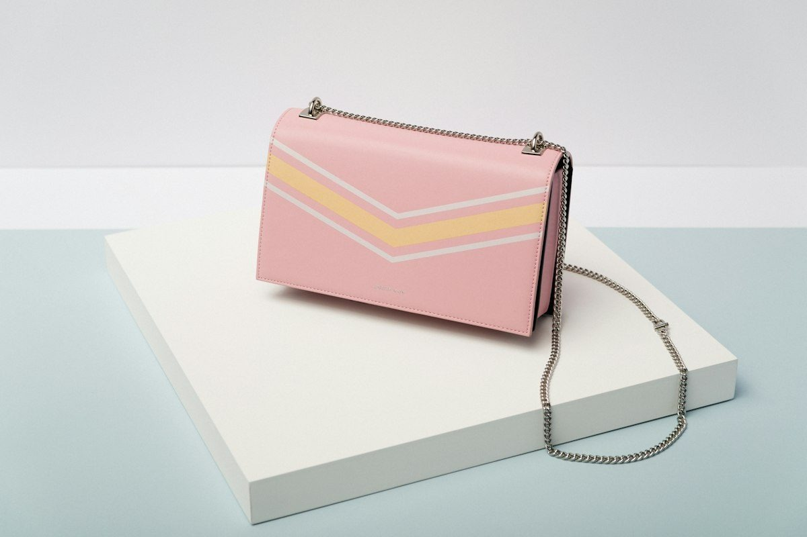
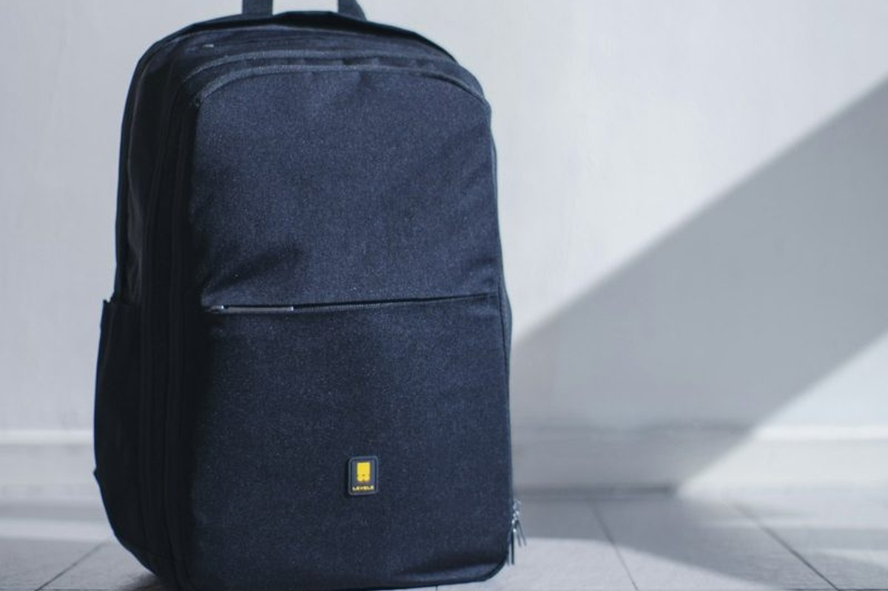

Artisanal Bag Services & Custom Commissions
From private client monogramming and custom dimensional drafting to comprehensive archival leather bag preservation, we provide end-to-end bespoke maroquinerie solutions.
Architectural Shoulder Bags
Every bespoke shoulder bag begins with individual millimeter drafting on rigid card stock. We engineer custom interior partitions, hidden smartphone vaults, and personalized strap drops tailored to your daily carry requirements.

Custom Structured Totes
Personalize your structured tote bag with our curated selection of creamy ivory, obsidian black, and warm terracotta leathers. Finished with reinforced handles and optional 24K gold leaf monogram hot-stamping.

Interlaced Woven Bags
Hand-woven from continuous strips of full-grain saddle leather, creating a supple, tactile tote bag that molds comfortably against the body while retaining its structural baseline across years of carry.
Heritage Briefcases & Cases
Bespoke executive briefcases constructed with double-layered bridle leather, reinforced internal wooden frames, hand-beveled edges, and custom solid brass buckle mechanisms for effortless professional command.

Transatlantic Travel Bags
Collaborate with our head artisan to create an archival travel duffle or weekender bag constructed completely to your specified dimensions with solid brass feet and reinforced floor panels.
Crossbody Bags & Restoration
Comprehensive bespoke crafting and archival maintenance for luxury crossbody bags. Our conservators handle seam re-stitching, brass hardware re-burnishing, deep nutrient conditioning, and turnlock fittings.
The Bespoke Bag Commission Workflow
A transparent four-phase process ensuring every technical nuance of your luxury bag is verified prior to the first knife cut.
| Phase | Artisan Action | Client Milestone | Duration |
|---|---|---|---|
| Phase 01: Consultation | Dimensional bag interview & material curation | Hide, color & hardware sign-off | Week 1 |
| Phase 02: Patterning | Paper drafting & dimensional bag modeling | Scale blueprint review | Week 2 |
| Phase 03: Craft Bench | Hand cutting, skiving & saddle-stitching bag | Progress photographic dispatch | Weeks 3 – 5 |
| Phase 04: Delivery | Hot wax edge finishing & serial registration | Atelier collection or insured delivery | Week 6 |